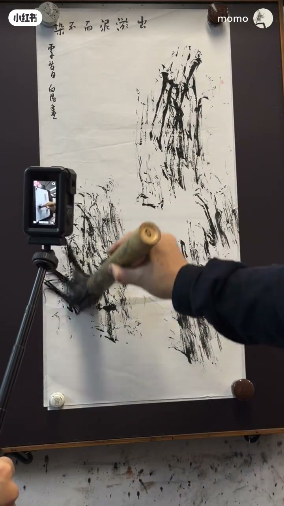
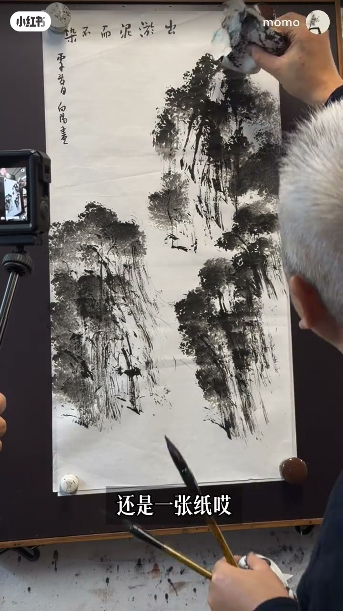
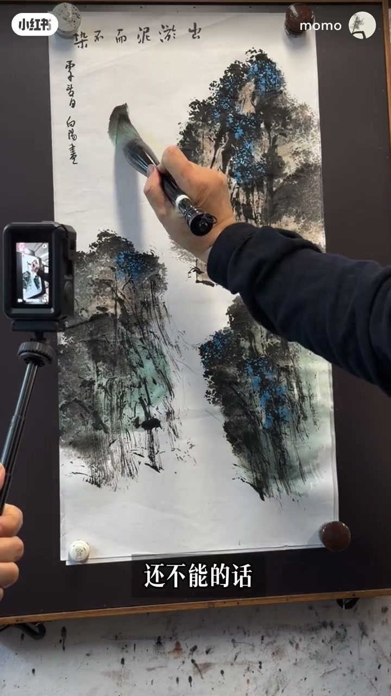
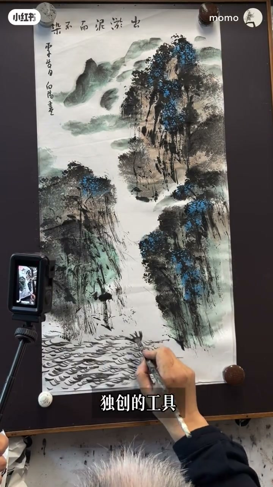
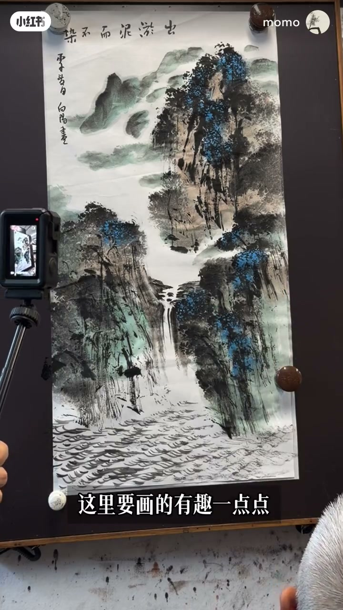
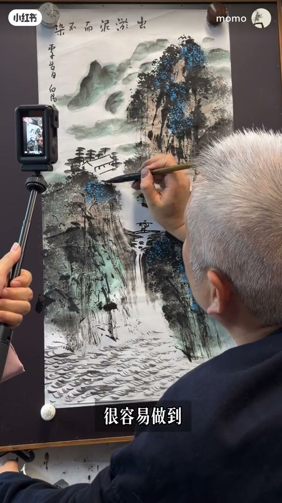
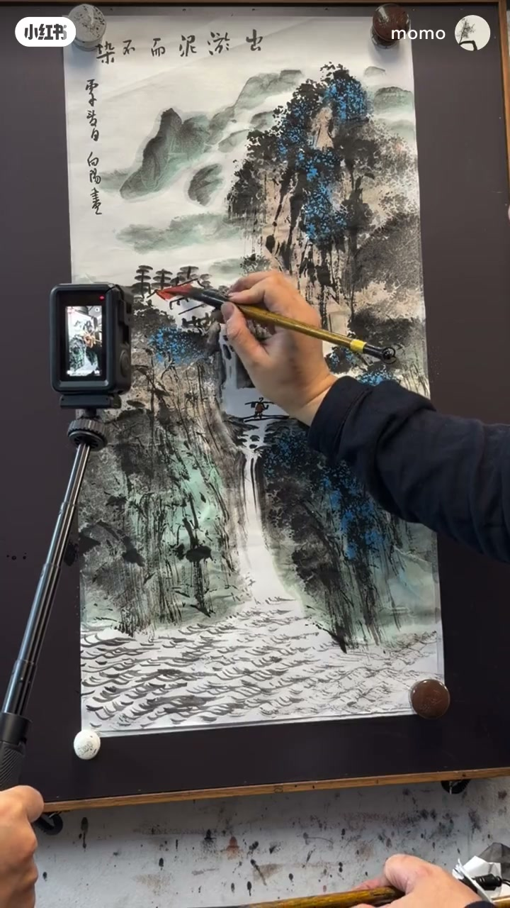
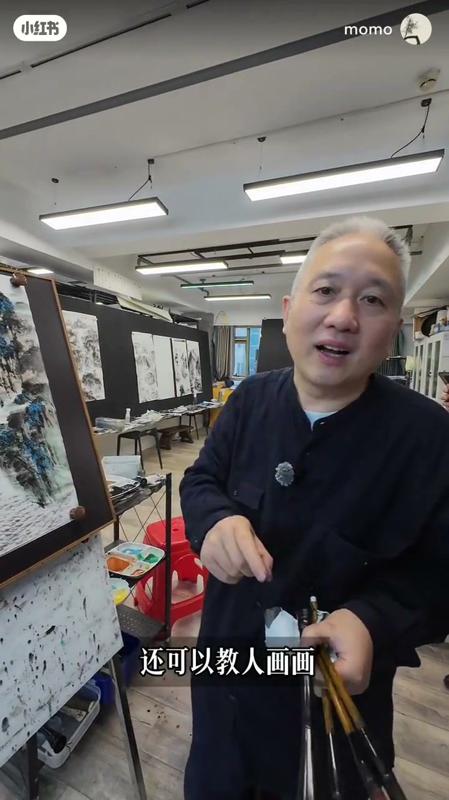

内容要点
「随手拿一张废纸即兴画山水，核心就三根竖线。零基础也」教程要点：想不想在别人面前露一手 → 想 → 非常简单 → 画个竖线；详见正文。
知识结构
想不想在别人面前露一手
黑龙白龙画中游
这个风之术很容易做到
- 想不想在别人面前露一手
- 想
- 非常简单
- 画个竖线
- 就是一画开天地
想不想在别人面前露一手
00:00–00:59想不想在别人面前露一手
想不想在别人面前露一手；想；非常简单；画个竖线；就是一画开天地；两个竖线；三个竖线；这个能不能做到；能；接下来就是我们的一纸神工；用一张纸沾墨；好 先打点；这个点是风还是领；风；好 再打一个领；有风 有领；这个方法我估计没有人画不好；因为就是三个竖线；一画开天地；看 这三个感觉还是一张纸；打一点颜色；打点厚重的颜色；在最黑的地方；再用纸石；看一下；远着画的纸石的话；就是暖一点的颜色；近期就画一点绿一点的；这个是用了草绿加上墨的；你要去即兴创作；能不能做到 同学们；还不能的话；那我就不能让你成为我们空心画画的一员；对不对；画个云；云遮山 山遮云；白色的云从这里飘过来；所以我的口诀是什么


00:58–01:50黑龙白龙画中游
黑龙白龙画中游；你看；把龙一画；气韵就出来了；我们再画一个水；好 这个画水的专用笔；大家都会画了的；好；读上的工具；一指神弓；再加上这个笔；你看一气呵成；让我们画水的口诀是什么；三粒水瓶 对吧；瀑布；先写个川字；这个口诀叫什么；对 五点连山；这里再打五个点；它是一个石头的意思；点连到山以后；它这里就产生一个曲线；这里要画得有趣一点点；可以在这里；画个桥 你看；画一个人；这个叫小中间大；有了这个小；这个山就大了；对吧 有趣了；在这里画个房子；房子；这口诀是什么；房前屋后；对 你看房前屋后；你看；房前屋后；你看


01:48–02:39这个风之术很容易做到
这个风之术很容易做到；画个梨花；画个平台；好 这个房子就出来了；这里画个水；好 可以了；好；用几个口诀；一连贯；几种物项；我们就能够即兴创作；水和这个山的关系就清楚了；发龙点睛；再把这个屋顶上一下色；这个地面要稍微连贯一下；这幅画就出来了；好不好看；好看；即兴创作越少越简单；越快越好；是不是；天下武功为快不化；是的；你们要成为这个即兴创作的人；以后就是社交高手；情绪价值的开创者；这就是我们空心画派；不仅可以自己画得好；还可以教人画画；而且是跨界高手；支撑一派；我们这一派会不会有前途；大家觉得有前途的；帮我在评论区点个赞；加入我们空心笔画派；一起来玩画画




口述/画面要点（40段）
结合 Whisper medium 与画面大字整理；专有名词已校对。
想不想在别人面前露一手
想
非常简单
画个竖线
就是一画开天地
两个竖线
三个竖线
这个能不能做到
能
接下来就是我们的一纸神工
用一张纸沾墨
好 先打点
这个点是风还是领
风
好 再打一个领
有风 有领
这个方法我估计没有人画不好
因为就是三个竖线
一画开天地
看 这三个感觉还是一张纸
打一点颜色
打点厚重的颜色
在最黑的地方
再用纸石
看一下
远着画的纸石的话
就是暖一点的颜色
近期就画一点绿一点的
这个是用了草绿加上墨的
你要去即兴创作
能不能做到 同学们
还不能的话
那我就不能让你成为我们空心画画的一员
对不对
画个云
云遮山 山遮云
白色的云从这里飘过来
所以我的口诀是什么
黑龙白龙画中游
你看